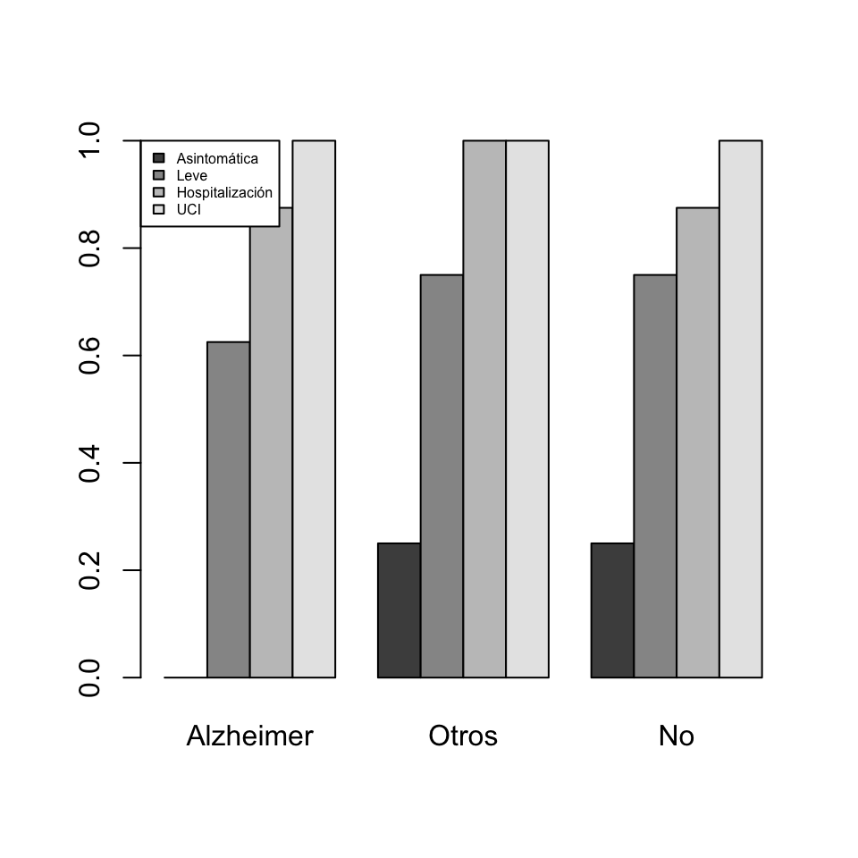
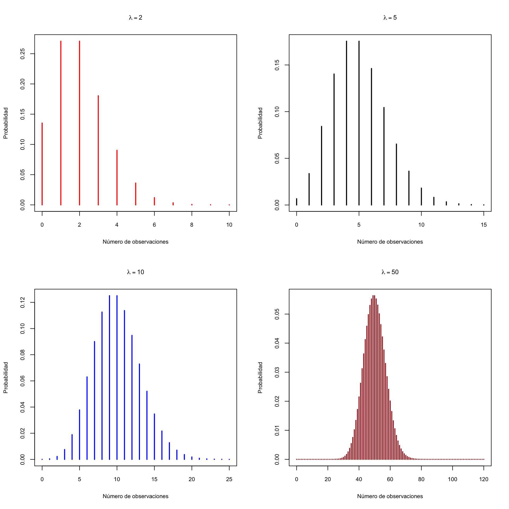
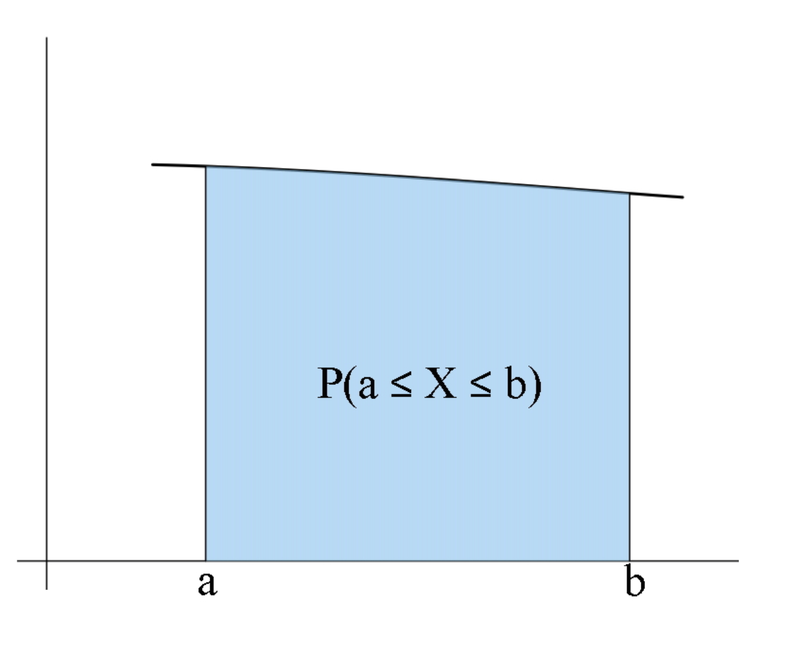
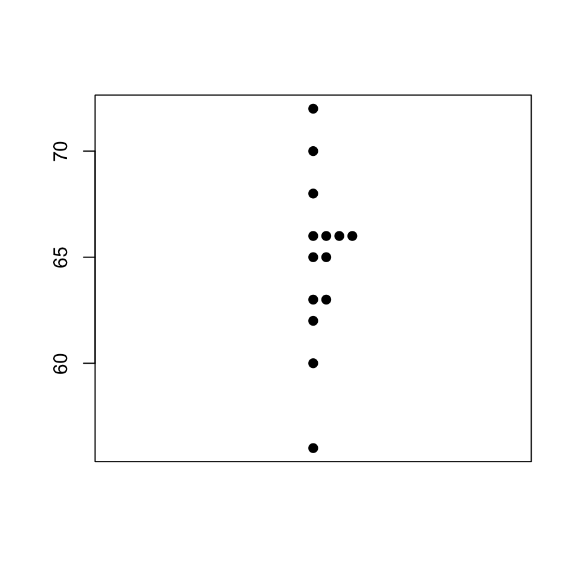

Lección 2 Variables aleatorias continuas
Cuando una variable aleatoria discreta puede tomar pocos valores, la probabilidad de cada valor es relevante.

Pero cuando puede tomar muchos valores, las probabilidades individuales pueden ser muy pequeñas y entonces lo que más nos interesa es la probabilidad de intervalos de valores.

En este curso nos vamos a restringir variables aleatorias continuas \(X: \Omega\to \mathbb{R}\) que satisfacen la siguiente propiedad extra: su función de distribución \[ \begin{array}{rcl} F_X: \mathbb{R} & \to & [0,1]\\ x &\mapsto &P(X\leq x) \end{array} \] es continua.
Resulta entonces que, si \(X\) es una variable aleatoria continua, la probabilidad de que tome cada valor concreto es 0 \[ P(X=a)=0 \text{ para todo $a\in \mathbb{R}$}. \]
En particular, para una variable aleatoria continua:
Probabilidad 0 no significa imposible.
Cada valor de \(X\) tiene probabilidad 0, pero cuando tomamos un sujeto, tendrá algún valor de \(X\), ¿no?. Por lo tanto, su valor de \(X\) es posible, aunque tenga probabilidad 0.
De \(P(X=a)=0\) se deduce que la probabilidad de un suceso definido con una desigualdad es exactamente la misma que la del suceso correspondiente definido con una desigualdad estricta, y en particular, contrariamente a lo que comentábamos para las variables aleatorias discretas \[ P(X\leq a)=P(X<a) \] porque \(P(X\leq a)=P(X<a)+P(X=a)=P(X<a)+0=P(X<a)\).
Otros ejemplos:
- \(P(X\geq a)=P(X> a)+P(X=a)=P(X> a)\)
- \(P(a\leq X\leq a)=P(a<X<b)+P(X=a)+P(X=b)\) \(=P(a<X<b)\)
2.1 Densidad y distribución
Sea \(X\) una variable aleatoria continua. Como ya hemos dicho, su función de distribución \(F_X\) se sigue definiendo como \[ a\mapsto F_X(a)=P(X\leq a) \]
Pero pùesto que tenemos que \(P(X=a)=0\), ahora no podemos definir la función de densidad de \(X\) como \(f_X(a)=P(X=a)\). ¿Qué podemos hacer?
Recordad que, en las variables aleatorias discretas \[ F_X(a)=\sum_{x\leq a} f_X(x) \]
En el contexto de matemáticas “continuas”, la suma \(\sum\) se traduce en la integral \(\int\). Se define entonces la función de densidad de una variable aleatoria continua \(X\) como la función \(f_X:\mathbb{R}\to \mathbb{R}\) tal que \(f_X(x)\geq 0\), para todo \(x\in \mathbb{R}\), y \[ F_X(a)=\int_{-\infty}^a f_{X}(x)\, dx\quad \text{para todo $a\in \mathbb{R}$.} \]

Recordad (o saber por primera vez) que la integral tiene una interpretación sencilla en términos de áreas. En concreto, dados \(a\in \mathbb{R}\) y una función “integrable” \(f(x)\), la integral \[ \int_{-\infty}^a f_{X}(x)\, dx \] es igual al área de la región a la izquierda de la recta vertical \(x=a\) comprendida entre la curva \(y=f(x)\) y el eje de abscisas \(y=0\). Por lo tanto, la función de densidad \(f_X\) de \(X\) es la función tal que para todo \(a\in \mathbb{R}\), \(F_X(a)\) es igual al área bajo la curva \(y=f_X(x)\) (entre esta curva y el eje de abscisas) a la izquierda de \(x=a\).

¿Cuál es la idea intuitiva que hay bajo esta definición de densidad? Suponed que dibujamos histogramas de frecuencias relativas de los valores de \(X\) sobre toda la población. Recordad que, en un histograma de estos, la frecuencia relativa (la probabilidad) de cada clase es la amplitud de la clase por la altura de su barra, a la que llamábamos la densidad de la clase (y por lo tanto, algo tendrá que ver con la densidad de \(X\), ¿no creéis?).
Si dibujamos los histogramas de \(X\) tomando clases cada vez más estrechas, sus polígonos de frecuencias tienden a dibujar una curva, que hemos coloreado en rojo en el último histograma:

Cuando hacemos que el ancho de las clases tienda a 0, obtenemos una curva que es el límite de estos polígonos de frecuencias: 
Esta curva es precisamente \(y=f_X(x)\). Es decir, la función de densidad \(f_X\) de una variable aleatoria continua \(X\) es la función límite de los polígonos de frecuencias de histogramas de \(X\) cuando hacemos que la amplitud de las clases tienda a 0.
Como \(P(X\leq a)\) es el área bajo la curva \(y=f_X(x)\) a la izquierda de \(x=a\), \[ \begin{array}{rl} P(a\leq X\leq b)\!\!\!\! & =P(X\leq b)-P(X<a)\\ &=P(X\leq b)-P(X\leq a) \end{array} \] es el área bajo la curva \(y=f_X(x)\) a la izquierda de \(x=b\) menos el área bajo la curva \(y=f_X(x)\) a la izquierda de \(x=a\), es decir, \(P(a\leq X\leq b)\) es igual al área bajo la curva \(y=f_X(x)\) entre \(x=a\) y \(x=b\).

Como \(P(X<\infty)=P(\Omega)=1\), el área total bajo la curva \(y=f_X(x)\) es 1.
Sabemos que \(P(X=a)=0\), pero si \(\varepsilon>0\) es muy, muy pequeño, el área bajo \(y=f_X(x)\) entre \(a-\varepsilon\) y \(a+\varepsilon\) es aproximadamente \(2\varepsilon\cdot f_X(a)\).

Por lo tanto \(f_X(a)\) nos da una indicación de la probabilidad de que \(X\) valga aproximadamente \(a\) (pero no es \(P(X=a)\), que vale 0). Es decir, por ejemplo, si \(f_X(a)=0.1\) y \(f_X(b)=0.5\), la probabilidad de que \(X\) tome un valor muy cercano a \(a\) es 5 veces mayor que la probabilidad de que tome un valor muy cercano a \(b\).
2.2 Esperanza, varianza, cuantiles…
La esperanza y la varianza de una variable aleatoria continua \(X\), con función de densidad \(f_X\), se definen como en el caso discreto, substituyendo la suma \(\sum_{x\in D_x}\) por una integral.
La esperanza (media, valor esperado…) de \(X\) es \[ E(X)=\int_{-\infty}^{\infty}x \cdot f_{X}(x)\, dx \] También se escribe \(\mu_X\) o simplemente \(\mu\).
Este valor tiene la misma interpretación que en el caso discreto:
Representa el valor medio de \(X\) sobre el total de la población
Es (con probabilidad 1) el límite de la media aritmética de los valores de \(X\) sobre muestras aleatorias simples de tamaño \(n\), cuando \(n\to \infty\).
Si \(g:\mathbb{R}\to \mathbb{R}\) es una función continua, la esperanza de \(g(X)\) es \[ E(g(X))=\int_{-\infty}^{+\infty} g(x) f_X(x)dx \]
La varianza de \(X\) es \[ Var(X)=E((X-E(X))^2) \] y se puede demostrar que es igual a \[ Var(X)=E(X^2)-E(X)^2 \] También se escribe \(\sigma_X^2\) o simplemente \(\sigma^2\).
La desviación típica de \(X\) es \[ \sigma(X)=+\sqrt{Var(X)} \] y también se escribe \(\sigma_X\) o \(\sigma\).
Como en el caso discreto, la varianza y la desviación típica miden la variabilidad de los resultados de \(X\) respecto de su valor medio.
Estos parámetros de \(X\) tienen las mismas propiedades en el caso continuo que en el discreto. Las recordamos:
\(E(b)=b\), si \(b\) es una variable aleatoria constante.
\(E(a X+b)=a E(X)+b\).
\(E(X+Y)=E(X)+E(Y)\).
Si \(X\leq Y\), entonces \(E(X)\leq E(Y)\).
\(Var(aX+b)=a^2 Var(X)\), donde \(a,b\) son constantes reales.
\(\sigma(aX+b)=|a|\cdot \sigma(X)\).
\(Var(b)=0\), si \(b\) es una variable aleatoria constante
\(Var(X+Y)=Var(X)+Var(Y)\) si \(X,Y\) son independientes
El cuantil de orden \(p\) (o \(p\)-cuantil) de una variable aleatoria continua \(X\) es el valor \(x_p\in \mathbb{R}\) más pequeño tal que \[ F_X(x_p)=P(X\leq x_p)=p \]
La mediana de \(X\) es su 0.5-cuantil, el primer y tercer cuartiles son su 0.25-cuantil y su 0.75-cuantil, etc.
2.3 Variables aleatorias normales
2.3.1 Propiedades básicas
Una variable aleatoria continua \(X\) es normal (o tiene distribución normal) de parámetros \(\mu\) y \(\sigma\) (\(N(\mu,\sigma)\), para abreviar) cuando su función de densidad es \[ f_{X}(x)=\frac{1}{\sqrt{2\pi}\sigma} e^{{-(x-\mu)^2}/{2\sigma^{2}}} \mbox{ para todo } x\in \mathbb{R} \]
Naturalmente, no os tenéis que saber esta fórmula.

Pero sí que tenéis que saber que:
Una variable aleatoria normal \(X\) es continua, y por lo tanto \(P(X=x)=0\), \(P(X\leq x)=P(X<x)\) etc.
Si \(X\) es \(N(\mu,\sigma)\), entonces su valor esperado es \(E(X)=\mu\) y su desviación típica es \(\sigma_X=\sigma\).
Una variable aleatoria normal es típica (o estándar) cuando tiene \(\mu=0\) y \(\sigma=1\); la denotaremos usualmente por \(Z\). Por lo tanto, si \(Z\) es \(N(0,1)\), \(E(Z)=0\) y \(\sigma(Z)=1\).
La gráfica de la densidad de una variable aleatoria normal es la conocida campana de Gauss:

La distribución normal es una distribución teórica, no la encontraréis exacta en la vida real. Y pese a su nombre, no es más “normal” que otras distribuciones continuas.

Su importancia se debe a que muchas distribuciones de la vida real son aproximadamente normales, porque:
Toda variable aleatoria que consista en tomar \(n\) medidas independientes de una o varias variables aleatorias y sumarlas, tiene distribución aproximadamente normal cuando \(n\) es muy grande, aunque las variables aleatorias de partida no sean normales
Ejemplo 2.1 Una variable binomial \(B(n,p)\) se obtiene tomando \(n\) medidas independientes de una variable Bernoulli \(B(1,p)\) y sumando los resultados. Por lo tanto, por la “regla” anterior, una \(B(n,p)\) tendría que ser aproximadamente normal si \(n\) es grande. Pues sí, si \(n\) es grande (pongamos mayor que 100, aunque si \(p\) está lejos de 0 o 1 el tamaño de las muestras puede ser mucho menor), la distribución de una variable \(X\) binomial \(B(n,p)\) se acerca mucho a la de una normal \(N(np,\sqrt{np(1-p)})\), donde, recordad que si \(X\) es \(B(n,p)\), entonces \(\mu_X=np\) y \(\sigma_X=\sqrt{np(1-p)}\).
Por ejemplo, el gráfico siguiente compara las funciones de distribución de una binomial \(B(50,0.3)\) y una normal \(N(50\cdot 0.3,\sqrt{50\cdot 0.3\cdot 0.7})\).

Para calcular probabilidades de una \(N(\mu,\sigma)\), hay que calcular las integrales a mano.

O podéis usar R o alguna aplicación para móvil o tablet. Par R, la normal es norm. Así, por ejemplo, si \(X\) es \(N(1,2)\)
- \(P(X\leq 1.5)\) es
## [1] 0.5987063- El 0.4-cuantil de \(X\), es decir, el valor \(q\) tal que \(P(X\leq q)=0.4\) es
## [1] 0.4933058- \(P(X=1.5)\) es
## [1] 0.1933341dnorm(1.5,1,2) es el valor de la función de densidad de \(X\) en 1.5, que no creemos que os interese mucho.
Una de las propiedades clave de la distribución normal es su simetría:

En particular, si \(Z\) es \(N(0,1)\), entonces \(f_Z\) es simétrica alrededor de \(x=0\), es decir, \(f_{Z}(-x)=f_{Z}(x)\), y la moda de \(Z\) es \(x=0\)
Recordad que la función de distribución de una variable aleatoria continua \(X\), \[ P(X\leq x)=F_X(x) \] es el área comprendida entre la densidad \(y=f_X(x)\) y el eje de abscisas a la izquierda de \(x\).

Entonces, la simetría de \(f_X\) hace que, para todo \(x\in \mathbb{R}\), las áreas a la izquierda de \(\mu-x\) y a la derecha de \(\mu+x\) sean iguales.

Es decir, \[ P(X\leq \mu-x)=P(X\geq \mu+x)=1-P(X\leq \mu+x) \]
En particular (tomando \(x=0\)) \[ P(X\leq \mu)=1-P(X\leq \mu)\Rightarrow P(X\leq \mu)=0.5 \] y por lo tanto, \(\mu\) es también la mediana de \(X\).
En particular, si \(Z\) es \(N(0,1)\), para cualquier \(z\in \mathbb{R}\), las áreas a la izquierda de \(-z\) y a la derecha de \(z\) son iguales \[ P(Z\leq -z)=P(Z\geq z)=1-P(Z\leq z) \] y la mediana de \(Z\) es 0.
Si \(\mu\) crece, desplaza a la derecha el máximo de la densidad, y con él toda la curva.

Si \(\sigma\) crece, la curva se aplana: al aumentar la desviación típica, los valores se alejan más del valor medio.

El gráfico siguiente muestra el efecto combinado:
Denotaremos por \(z_q\) el \(q\)-cuantil de una variable normal estándar \(Z\). Es decir, \(z_q\) es el valor tal que \(P(Z\leq z_q)=q\).
Aparte del hecho que \(z_{0.5}=0\) (la mediana de \(Z\) es 0), hay dos cuantiles más de la normal estándar \(Z\) que tendríais que recordar:
\(z_{0.95}=1.64\); es decir, \(P(Z\leq 1.64)=0.95\) y por lo tanto \(P(Z\leq -1.64)=P(Z\geq 1.64)=0.05\).
\(z_{0.975}=1.96\); es decir, \(P(Z\leq 1.96)=0.975\) y por lo tanto \(P(Z\leq -1.96)=P(Z\leq 1.96)=0.025\)
Ejemplo 2.2 Supongamos que la concentración de un cierto metabolito es una variable aleatoria de distribución normal, pero cuyos parámetros \(\mu\) y \(\sigma\) varían dependen de si la medimos en personas sanas o en personas con una cierta enfermedad. Sean:
\(X_E\) la variable aleatoria “Mido la concentración de este metabolito en una persona enferma”, y supongamos que es \(N(\mu_E, \sigma_E)\).
\(X_S\) la variable aleatoria “Mido la concentración de este metabolito en una persona sana”, y supongamos que es \(N(\mu_S, \sigma_S)\).
Supongamos, para fijar ideas, que \(\mu_E>\mu_S\): la concentración media de este metabolito en los enfermos es más alta que en las personas sanas.
Podemos usar como prueba diagnóstica de la enfermedad la concentración del metabolito. Para cada valor de referencia \(x_0\), nuestra prueba dará:
Positivo, si la concentración es mayor o igual que \(x_0\)
Negativo, si la concentración es menor que \(x_0\)
Entonces:
La sensibilidad de esta prueba es \[ P(+|E) =P(X_E\geq x_0)=1-P(X_E< x_0)=1-F_{X_E}(x_0) \]
Su especificidad es \[ P(-|S)=P(X_S< x_0)=F_{X_S}(x_0) \]
Su tasa de falsos positivos es \[ P(+|S)=P(X_S\geq x_0)=1-F_{X_S}(x_0) \]
Al variar \(x_0\), tenemos valores diferentes de la sensibilidad y la tasa de falsos positivos. Entonces, podemos dibujar su curva ROC y escoger el umbral con algún criterio o, con su AUC, valorar su capacidad diagnóstica global.
Por ejemplo, imaginad que la densidad de \(X_E\) es la línea discontinua del gráfico de la izquierda de la figura siguiente y la de \(X_S\) la línea continua. Ambas son normales y \(\mu_E>\mu_S\), porque el pico de la densidad de \(X_E\) está a la derecha del de \(X_S\).

Si para cada \(x\) dibujamos los puntos \((1-F_{X_S}(x),1-F_{X_E}(x))\), obtenemos la curva ROC de la derecha de dicha figura.
2.3.2 Combinaciones lineales
Una de las propiedades de la distribución normal que nos facilitan mucho la vida es que toda combinación lineal de variables aleatorias normales independientes es normal. En concreto, tenemos los resultados siguientes:
Teorema 2.1 Sea \(X\) una variable \(N(\mu,\sigma)\).
Para todos \(a,b\in \mathbb{R}\), \(aX+b\) es \(N(a\mu+b,|a|\cdot\sigma)\).
En particular, la tipificada de \(X\) \[ Z=\dfrac{X-\mu}{\sigma} \] es \(N(0,1)\).
Más en general:
Las probabilidades de la normal tipificada determinan las de la normal original, porque si \(X\) es \(N(\mu,\sigma)\): \[ \begin{array}{rl} P(a\leq X\leq b) & \displaystyle =P\Big( \frac{a-\mu}{\sigma}\leq \frac{X-\mu}{\sigma}\leq \frac{b-\mu}{\sigma}\Big)\\ & \displaystyle =P\Big(\frac{a-\mu}{\sigma}\leq Z\leq \frac{b-\mu}{\sigma}\Big) \end{array} \] Esto sirve para deducir fórmulas, y vuestros padres lo usaban para calcular probabilidades (con tablas de probabilidades de la normal estándar); ahora es más cómodo usar una aplicación del móvil.
2.3.3 Intervalos de referencia
Un intervalo de referencia del \(100q\%\) para una variable aleatoria \(X\) es un intervalo \([a,b]\) tal que \[ P(a\leq X\leq b)=q. \] Es decir, un intervalo de referencia del \(100q\%\) para \(X\) es un intervalo que contiene los valores de \(X\) del \(100q\%\) de los sujetos de la población.
Los más comunes son los intervalos de referencia del 95% (\(q=0.95\)), que satisfacen que \[ P(a\leq X\leq b)=0.95 \] y son los, que por ejemplo, os dan como valores de referencia en las analíticas:

Cuando \(X\sim N(\mu,\sigma)\), estos intervalos de referencia se toman siempre centrados en la media \(\mu\), es decir, de la forma \([\mu-\text{algo},\mu+\text{algo}]\). Para calcularlos fácilmente, podemos emplear el resultado siguiente:
Teorema 2.3 Si \(X\) es \(N(\mu,\sigma)\), un intervalo de referencia del \(100q\%\) para \(X\) es \[ [\mu- z_{(1+q)/2}\cdot \sigma, \mu+ z_{(1+q)/2}\cdot \sigma] \] donde \(z_{(1+q)/2}\) denota el \((1+q)/2\)-cuantil de la normal estándar \(Z\). Normalmente escribiremos este intervalo como \[ \mu\pm z_{(1+q)/2}\cdot \sigma. \]
En efecto: \[ \begin{array}{l} P(\mu-x\leq X\leq \mu+x)=q\\ \qquad \Longleftrightarrow \displaystyle P\Big(\frac{\mu-x-\mu}{\sigma}\leq \frac{X-\mu}{\sigma}\leq \frac{\mu+x-\mu}{\sigma}\Big)=q\\ \qquad \Longleftrightarrow \displaystyle P(-x/{\sigma}\leq Z\leq {x}/{\sigma})=q\\ \qquad \Longleftrightarrow \displaystyle P(Z\leq {x}/{\sigma})-P(Z\leq -{x}/{\sigma})=q\\ \qquad \Longleftrightarrow \displaystyle P(Z\leq {x}/{\sigma})-(1-P(Z\leq {x}/{\sigma}))=q\\ \qquad \text{(por la simetría de $f_Z$ alrededor de 0)}\\ \qquad \Longleftrightarrow \displaystyle 2P(Z\leq {x}/{\sigma})=q+1\\ \qquad \Longleftrightarrow P(Z\leq {x}/{\sigma})=(1+q)/2\\ \qquad \Longleftrightarrow x/\sigma= z_{(1+q)/2}\\ \qquad \Longleftrightarrow x=z_{(1+q)/2}\cdot \sigma \end{array} \]
Si \(q=0.95\), entonces \((1+q)/2=0.975\) y entonces \(z_{0.975}=1.96\). Por lo tanto, el intervalo de referencia del 95% para una variable \(X\) normal \(N(\mu,\sigma)\) es \[ \mu\pm 1.96\sigma. \] Y como este 1.96 a menudo se aproxima por 2, el intervalo de referencia del 95% se simplifica a \[ \mu\pm 2\sigma. \] Esto dice, básicamente, que
si una población sigue una distribución normal \(N(\mu,\sigma)\), un 95% de sus individuos tienen su valor de \(X\) a distancia como a máximo \(2\sigma\) (“a dos sigmas”) de \(\mu\).
Ejemplo 2.3 Según la OMS, las alturas de las mujeres europeas de 18 años (en cm) siguen una ley \(N(163.1,18.53)\). ¿Cuál es el intervalo de alturas centrado en la media que contiene a la mitad las europeas de 18 años?
Fijaos en que, si llamamos \(X\) a la variable aleatoria “Altura de una mujer europea de 18 años en cm”, lo que queremos saber es el intervalo centrado en su media, 163.1, tal que la probabilidad de que la altura de una europea de 18 años escogida al azar pertenezca a este intervalo sea 0.5 Es decir, el intervalo de referencia del 50% para \(X\).
Sabemos que \(X\) es \(N(163.1,18.53)\). Si \(q=0.5\), entonces \((1+q)/2=0.75\) y podemos calcular con R o una aplicación el 0.75-cuantil \(z_{0.75}\) de una normal estándar. Por ejemplo, con R,
## [1] 0.6744898Por lo tanto, redondeando a mm, es el intervalo \(163.1\pm 0.6745\cdot 18.53\), es decir \([150.6, 175.6]\). Esto nos dice que la mitad de las mujeres europeas de 18 años miden entre 150.6 y 175.6.
El z-score (z-valor, z-puntuación, z-puntaje…) de un valor \(x_0\in \mathbb{R}\) respecto de una distribución \(N(\mu,\sigma)\) es \[ \frac{x_0-\mu}{\sigma} \]
Es decir, el z-score de \(x_0\) es el resultado de “tipificar” \(x_0\) en el sentido del Teorema 2.1.2.
Si la variable poblacional es normal, cuanto mayor es el valor absoluto del z-score de \(x_0\), más “raro” es \(x_0\); el signo nos dice si es más grande o más pequeño que el valor esperado \(\mu\).
Ejemplo 2.4 Recordad que, según la OMS, las alturas de las mujeres europeas de 18 años siguen una ley \(N(163.1,18.53)\). ¿Cuál sería el z-score de una jugadora de baloncesto de 18 años que midiera 191 cm?
Sería \[ \frac{191-163.1}{18.53}=1.5 \]
Esto se suele leer diciendo que la altura de esta jugadora está 1.5 sigmas por encima de la altura media.
Ejemplo 2.5 Se acepta que la presión sistólica se distribuye como una variable normal con valor medio y desviación típica que dependen del sexo y la edad. Para la franja de edad 16-24 años, estos valores son:
- Para hombres, \(\mu=124\) y \(\sigma=13.7\)
- Para mujeres, \(\mu=117\) y \(\sigma=13.7\)
El modelo de hipertensión-hipotensión aceptado es el descrito en la Figura 2.1. Queremos calcular los límites de cada clase para cada sexo en este grupo de edad.

Figura 2.1: Modelo de hipertensión-hipotensión.
Veamos:
- El límite superior del grupo de hipotensión será el valor que deja a la izquierda un 5% de las tensiones: el 0.05-cuantil de la distribución.
- El límite superior del grupo de riesgo de hipotensión será el valor que deja a la izquierda un 10% de las tensiones: el 0.1-cuantil de la distribución.
- El límite inferior del grupo de riesgo de hipertensión será el valor que deja a la izquierda un 90% de las tensiones: el 0.9-cuantil de la distribución.
- El límite inferior del grupo de hipertensión será el valor que deja a la izquierda un 95% de las tensiones: el 0.95-cuantil de la distribución.
En los hombres, la tensión sistólica es una variable aleatoria \(N(124,13.7)\). Podemos usar R o una aplicación para calcular estos cuantiles. Con R:
- El 0.05-cuantil es
## [1] 101.4655- El 0.1-cuantil es
## [1] 106.4427- El 0.9-cuantil es
## [1] 141.5573- El 0.95-cuantil es
## [1] 146.5345En resumen,entre los hombres de 16 a 24 años: \[ \begin{array}{|ll|} \hline \text{Grupo} & \text{Intervalo}\\ \hline \text{Hipotenso} & <101.5\\ \text{Prehipotenso} & 101.5\text{ a }106.4\\ \text{Normotenso} & 106.4\text{ a }141.6\\ \text{Prehipertenso} & 141.6\text{ a }146.5\\ \text{Hipertenso} & > 146.5\\ \hline \end{array} \]
2.4 Test
(1) Sea \(X\) una variable aleatoria continua de función de densidad: \[ f_X(x)=\left\{\begin{array}{ll} 0 & \mbox{si $x<0$}\\ 2e^{-2x} & \mbox{si $x>0$} \end{array} \right. \] ¿Es cierto que \(P(X=1)=2e^{-2}\)?
- Sí
- No: en realidad \(P(X=1)=\int_{-\infty}^1 2e^{-2x}\,dx\) pero me da pereza calcularlo
- Esto no es la función de densidad de una variable aleatoria continua, porque no es una función continua (en el 0 salta de 0 a 1)
- Todas las otras respuestas son incorrectas
(2) \(X\) una variable aleatoria continua de media \(\mu\). ¿Qué vale \(P(X=\mu)\)?
- 0.5
- \(\mu\)
- 0
- Depende de la variable aleatoria
- Todas las otras respuestas son falsas
(3) En una variable aleatoria discreta, su función de densidad (marcad una única respuesta):
- Es la derivada de la función de distribución.
- Mide lo denso que es su dominio.
- Aplicada a un par de números real, nos da la probabilidad de obtener valores dentro del intervalo definido por dichos números.
- Aplicada a un número real, nos da da la probabilidad de obtener dicho número.
- Aplicada a un número real, nos da la probabilidad de obtener un valor menor o igual que dicho número.
(4) Sea \(Z\) una variable aleatoria normal estándar. Marcad las afirmaciones verdaderas.
- Es asimétrica a la izquierda.
- Su media es 1.
- Su desviación típica es 0.
- Su varianza es 1.
- Su mediana es 0.
(5) Sea \(X\) una variable aleatoria \(N(\mu,\sigma)\) y \(f_X\) su función de densidad. ¿Qué vale el área entre la curva \(y=f_X(x)\) y el eje de abscisas?
- 0
- \(\mu\)
- \(\sigma\)
- 1
- Todas las otras respuestas son falsas
(6) Sea \(X\) una variable aleatoria \(N(\mu,\sigma)\) y \(f_X\) su función de densidad. ¿Cuál de las afirmaciones siguientes es correcta?
- \(\mu\) es la media de \(X\), pero no su mediana
- \(\mu\) es la media y la mediana de \(X\), pero no su moda
- \(\mu\) es la media, la mediana y la moda de \(X\), pero no es verdad que \(P(X=\mu)>P(X=a)\) para todo \(a\neq \mu\)
- \(\mu\) es la media, la mediana y la moda de \(X\) y \(P(X=\mu)>P(X=a)\) para todo \(a\neq \mu\)
(7) Si la concentración de un cierto metabolito tiene un intervalo de referencia (del 95%) entre 0 y 22 mg/dL, ¿qué podemos afirmar de su distribución? (Marcad la única respuesta correcta.)
- Que es normal.
- Que es simétrica, pero no necesariamente normal.
- Que es asimétrica con cola a la derecha.
- Que es asimétrica con cola a la izquierda.
- Que es platicúrtica.
(8) ¿Qué distribución es la más adecuada para modelar el número anual de fallecimientos entre enfermos de cáncer tratados con una determinada quimioterapia? Marcad una única respuesta.
- Normal
- Binomial
- Poisson
- Uniforme acotada (todos los números de fallecimientos entre 0 y un cierto valor \(N\) tienen la misma probabilidad)
(9) El FME (Flujo Máximo de Expiración) de las chicas de 11 años sigue una distribución aproximadamente normal de media 300 l/min y desviación típica 20 l/min. Marcad las afirmaciones verdaderas:
- Aproximadamente la mitad de las chicas de 11 años tienen un FME entre 280 l/min y 320 l/min.
- Alrededor del 95% de las chicas de 11 años tienen un FME entre 280 l/min y 320 l/min.
- Alrededor del 95% de las chicas de 11 años tienen un FME entre 260 l/min y 340 l/min.
- Alrededor del 5% de las chicas de 11 años tienen un FME inferior a 260 l/min.
- Ninguna chica de 11 años tiene FME superior a 360 l/min.
(10) En una muestra aleatoria extraída de población sana se encuentra que una variable bioquímica tiene como media 90 y desviación típica 10. Si tomamos una muestra de individuos sanos ¿es razonable esperar que aproximadamente el 95% de ellos tengan un valor de esa variable comprendido entre 70 y 110? (marcad todas las respuestas correctas):
- Sí, siempre.
- No, nunca.
- Si la variable tiene distribución normal, entonces sí.
- Si la muestra es suficientemente grande, entonces sí.
- Si la variable tiene distribución normal y la muestra es suficientemente grande, entonces sí.